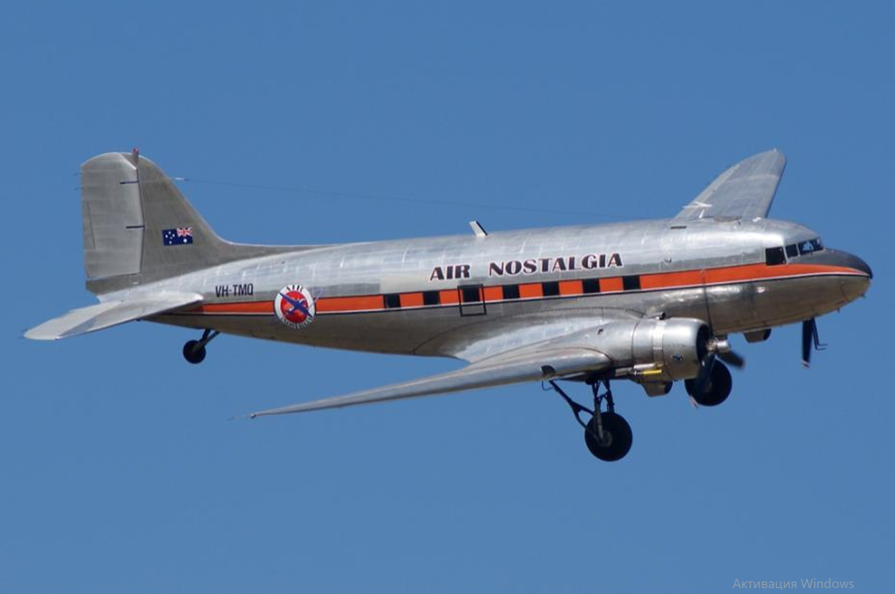
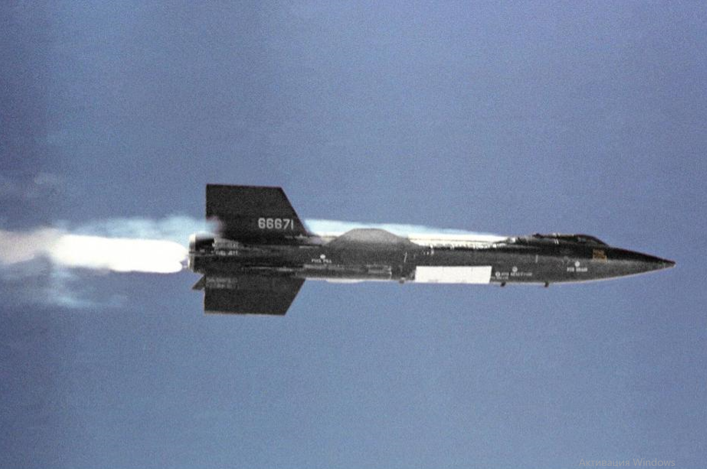
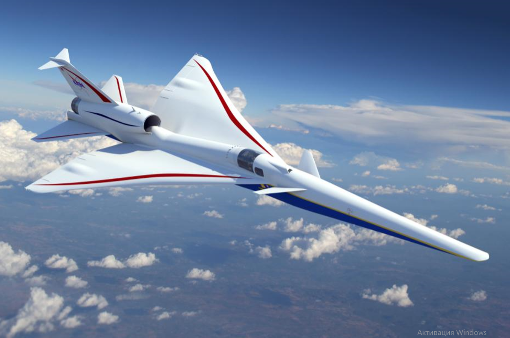

Самолёт — класс воздушных судов тяжелее воздуха, предназначенных для
полётов в атмосфере с помощью силового агрегата, создающего тягу и
неподвижного относительно других частей аппарата крыла, создающего
подъёмную силу.
Самолёт — класс воздушных судов тяжелее воздуха, предназначенных для
полётов в атмосфере с помощью силового агрегата, создающего тягу и
неподвижного относительно других частей аппарата крыла, создающего
подъёмную силу.
Самолёт - класс воздушных судов тяжелее воздуха, предназначенных для полётов в атмосфере с помощью силового агрегата, создающего тягу и неподвижного относительно других частей аппарата крыла, создающего подъёмную силу[4][5]. Неподвижное крыло отличает самолёт от махолёта (орнитоптера) и вертолёта, а наличие двигателя — от планёра и мускулолёта. От дирижабля и аэростата самолёт отличается тем, что использует аэродинамический, а не аэростатический способ создания подъёмной силы.
Происхождение термина Слово «самолёт» в русском языке до XIX века использовалось для обозначения других объектов. Так, В. П. Бурнашев приводит его в своём словаре (1843—1844 гг.) в таком значении: «В ткацком стане — челнок, который бросают не рукою, а посредством погонялки». В некоторых губерниях России самолётом называли примитивное орудие для пахоты (типа сохи)[6]. Применительно к летательным аппаратам слово «самолёт» стало использоваться лишь со второй половины XIX века, при этом вошло в употребление далеко не сразу. Известно, что в 1857 году капитан 1-го ранга Н. М. Соковнин использовал слово «самолёт» для обозначения управляемого аэростата[7]. В значении, близком к современному, слово «самолёт» впервые употребил журналист и писатель Аркадий Эвальд в статье «Воздухоплавание» 1863 года (газета «Голос»[8][9]), где он впервые в России предложил идею подобного летательного аппарата. Но ни А. Ф. Можайский, ни Н. И. Кибальчич этого термина не употребляли. В патенте Можайского, датированном 1881 годом, его изобретение названо «воздухоплавательным снарядом»[10]. С лёгкой руки поэта-футуриста В. В. Каменского, увлекавшегося авиацией и совершавшего самостоятельные полёты сначала на монопланах, а затем — на аэропланах собственной постройки, слово «самолёт» с 1910 года распространилось сначала в поэтической среде того времени, а потом «вышло в массы». Произошло это не так быстро; аэроплан стал называться самолётом примерно в середине 30-х годов XX столетия.
| Номер | Название | Изображение | Тип |
|---|---|---|---|
| 1 | Ан-74 |

|
Дозвуковой |
| 2 | Douglas DC-3 |  | Дозвуковой |
| 3 | Ту-154 |

|
Околозвуковые |
| 4 | Ту-22М |

|
Сверхзвуковые |
| 5 | Конкорд |

|
Сверхзвуковые |
| 6 | X-15 |  | Гиперзвуковые |
| 7 | М-17 |

|
Дозвуковой |
| 8 | Lockheed Martin X-59 QueSST |  | Сверхзвуковые |
| 9 | Ту-144 |

|
Сверхзвуковые |
| 10 | SpaceShipOne |

|
Гиперзвуковые |